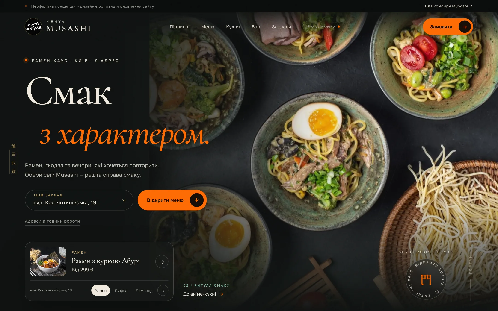
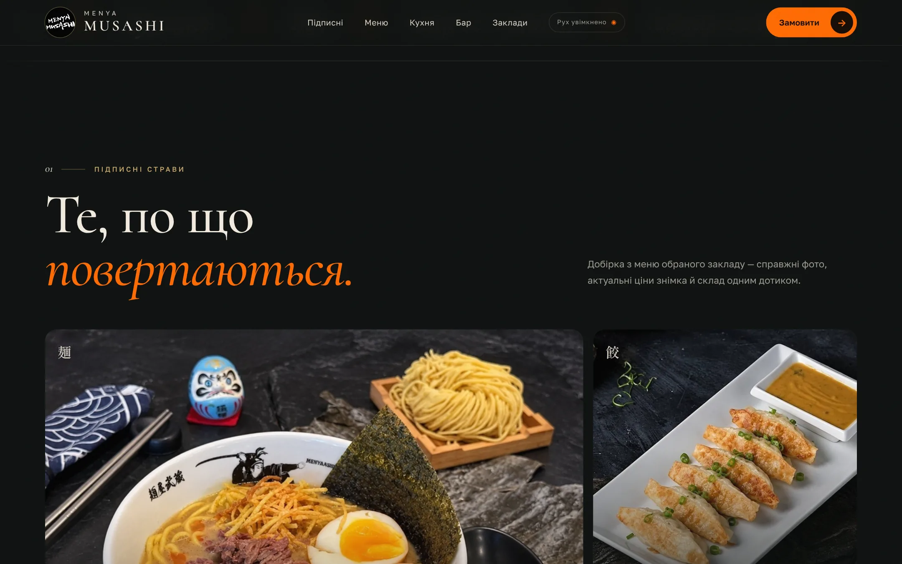
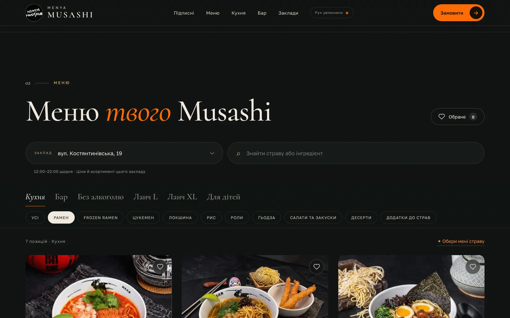
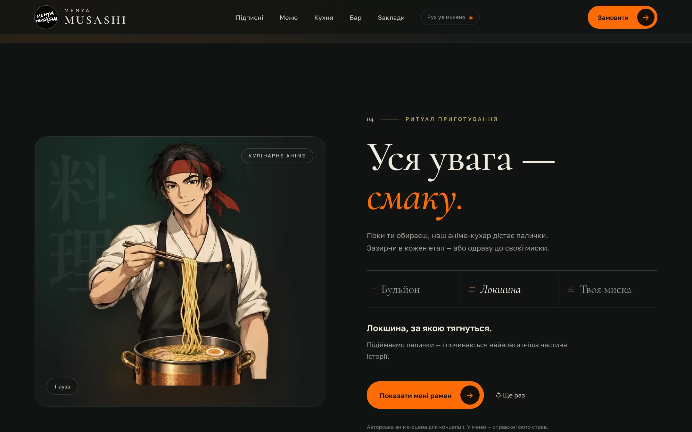
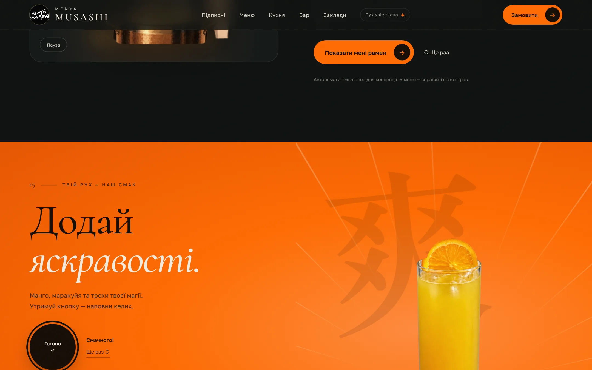
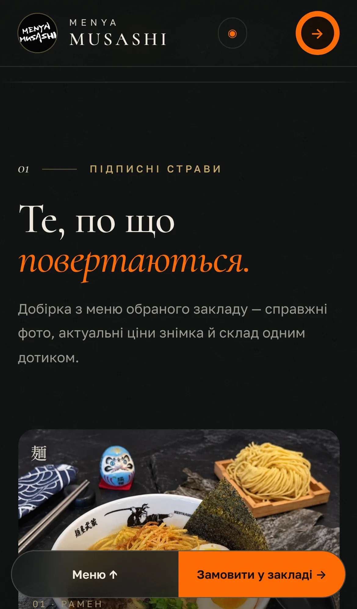
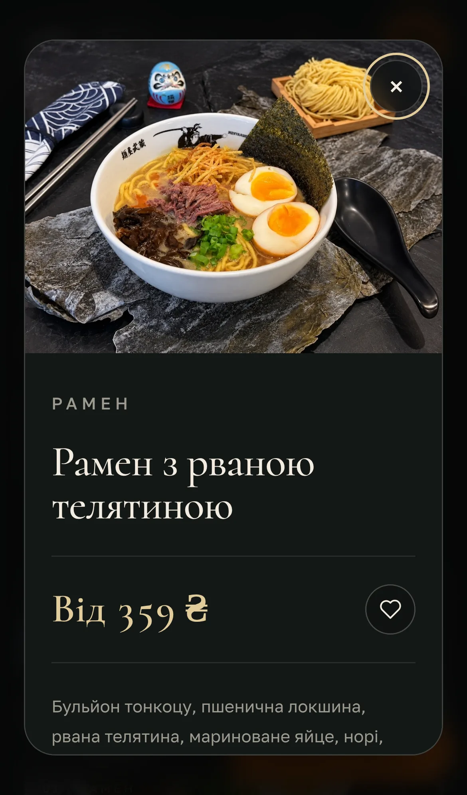

Атмосфера
Торії, самурай у стилістиці постера Menya Musashi × Torisho, розкриття воріт до справжніх фото кухні. Характер — без важких інтро й блокування меню.
Пропозиція · листопад 2026
Інтерактивна концепція для Menya Musashi Kyiv: ваші справжні фотографії, японський характер бренду та меню всіх дев’яти київських закладів — у швидкому, мобільному й готовому до пілоту сайті.
01Ідея
Гість має відчути характер Musashi за секунду, а побачити свою миску рамену — за дві. Концепція поєднує атмосферу бренду з дуже практичним меню.
Торії, самурай у стилістиці постера Menya Musashi × Torisho, розкриття воріт до справжніх фото кухні. Характер — без важких інтро й блокування меню.
Підписні страви великими кадрами, каталог із пошуком за назвою та складом, картки з варіантами й «Обране» окремо для кожного закладу.
Обрати заклад → знайти страву → перейти до конкретної картки в офіційному Choice. Ваш процес замовлення та оплати не змінюється.
02Що всередині

Перший екран реагує на курсор і прокручування. Печатка «門» розсуває чорнильну завісу — і замість ілюстрації гість бачить справжній стіл Musashi. Вибір закладу та кнопка меню доступні одразу.

Редакційна галерея найфотогенічніших страв обраного закладу: рамен, ґьодза, цукемен, бао, роли. Добірка будується з меню автоматично, тож ціни завжди відповідають локації.

Кожна локація має власний каталог: кухня, бар, без алкоголю, ланчі L/XL, сезонні та спеціальні розділи, бар Torisho. Пошук працює за назвою й інгредієнтами по всьому меню закладу.

Восьмикадрова сцена: кухар підіймає локшину, парує бульйон, а на фінальному етапі з’являється справжнє фото рамену з ціною обраного закладу. Пауза, повтор і перемикання етапів.

Утримуйте кнопку — і келих лимонаду манго-маракуйя наповнюється. Маленька гра, яка веде до справжньої картки напою. З’являється тільки там, де напій є в меню.


Більшість гостей обирає вечерю зі смартфона. Тому на мобільному завжди під рукою дві дії: «Меню» та «Замовити у закладі». Картка страви відкривається на весь екран.
03Шлях гостя
04Візуальна мова
Напрям побудовано на постері Menya Musashi × Torisho: графітове тло, помаранчеві торії, світлі штрихи та доросла манґа-графіка. Це концептуальна адаптація, а не твердження про затверджений брендбук мережі.
Смак з характером.
Рамен з рваною телятиною — від 359 ₴
麺屋武蔵
05План запуску
Затверджуємо напрям дизайну, тон текстів і використання ілюстрацій. Отримуємо оригінали фото у високій роздільності та актуальні адреси.
Погоджений експорт або інтеграція з Choice/POS для автоматичного оновлення цін, складу та стоп-листа.
Залишаємо перехід у Choice або, за наявності підтримуваної інтеграції, підключаємо оформлення на сайті.
Перевіряємо каталог одного закладу з його командою, тестуємо на телефонах, підключаємо домен і вимірювання переходів.
06Пакети
від 45 000 ₴
≈ 3 тижні · 1 заклад
від 120 000 ₴
≈ 6–8 тижнів · 9 закладів
від 15 000 ₴/міс
щомісяця · без довгих контрактів
Вартість орієнтовна й фіксується після брифу та доступу до актуальних даних. Зростання продажів не обіцяється без вимірювання — для пілоту відстежуємо відкриття меню, вибір локації, відкриття карток і переходи до оформлення.
07Що потрібно від вас
08Перевіримо разом
Розділи, що з’являються лише в певні години, порожні дитячі розділи, сезонні пропозиції, умови Ramen Challenge, перейменовані адреси, телефони, правила доповнень і доступність замовлення для кожної локації. Дані демо не синхронізуються автоматично — остаточну ціну й наявність підтверджує заклад.
Наступний крок
Живе демо працює просто з ноутбука чи телефона — без встановлення. Після зустрічі надішлю план пілоту для обраного закладу.
Джерела та права. Каталог — знімок відкритих меню дев’яти закладів у Choice від 06.11.2026, пов’язаних з офіційним сайтом menyamusashi.shop; додатково — menya634.co.jp. Шари торіїв і самурая та кулінарний персонаж створені за допомогою ШІ для цієї пропозиції й не є затвердженими матеріалами бренду. Анімація лимонаду — візуалізація на основі фото напою; оригінальне фото доступне в картці. Фото каталогу справжні. Фотографії, логотип і назви належать їхнім правовласникам і використані лише для демонстрації. Це не офіційний сайт мережі; оплата й надсилання замовлень у демо не імітуються. Шрифти Golos, Cormorant і Shippori Mincho — SIL Open Font License.